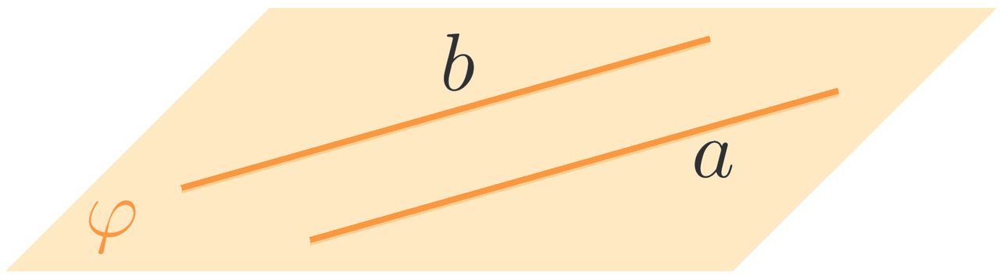

Created: 2024-09-17 Tue 16:15
Параллельность прямых и плоскостей
Параллельные прямые в пространстве. Взаимное расположение прямой и плоскости
Две прямые в пространстве называются параллельными, если они лежат в одной плоскости и не пересекаются.

Способа задания плоскости:
Если одна из двух параллельных прямых пересекает некоторую плоскость, то и вторая прямая пересекает эту плоскость.
Плоскость a проходит через основание AD трапеции ABCD . Пересекает ли прямая BC плоскость a
Через точку, не принадлежащую данной прямой, проходит параллельная ей прямая и притом только одна.
—